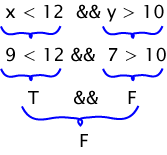
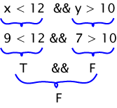

Answer:
Assume that x contains 9 and y contains 7.
The expression evaluates to False. One way to show this is below.

Assume that x contains 9 and y contains 7.
The expression evaluates to False. One way to show this is below.

A truth table is another way to show the evaluation of a boolean expression. Each row of a truth table starts with a selection of truth values for the operands. There is one row for each possible selection of truth values. The columns show the truth value of expressions and subexpressions containing the operands.
| Operands | Boolean Expression | |
|---|---|---|
| x < 12 | y > 10 | x < 12 && y > 10 |
| F | F | F |
| F | T | F |
| T | F | F |
| T | T | T |
The above table has four rows for the truth values,
one row for each of the four possible choices for the two operands.
(The operands are the relational expressions x<12 and y>10.)
The last column shows the result of the
&& operator
with those values.
What row of the table is used when x contains 1 and y contains 23?